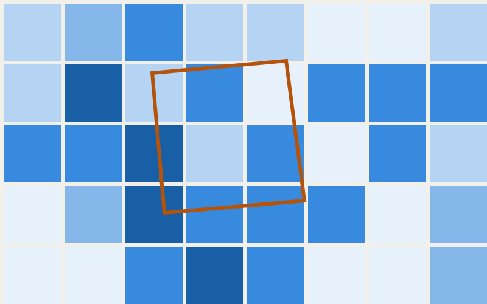
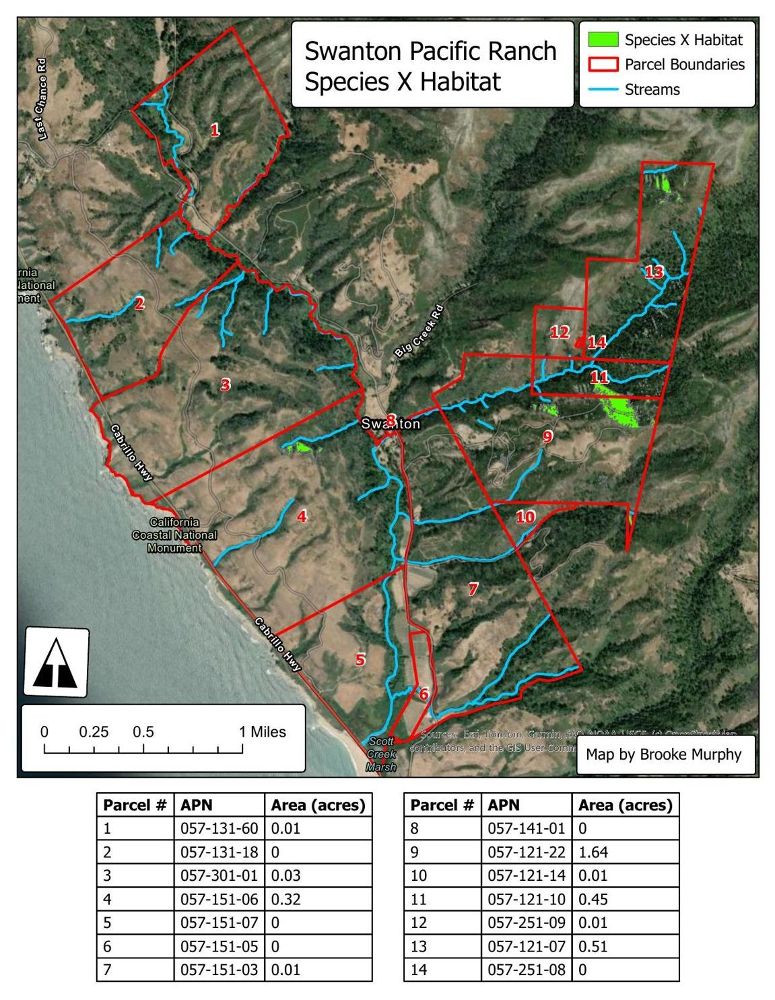
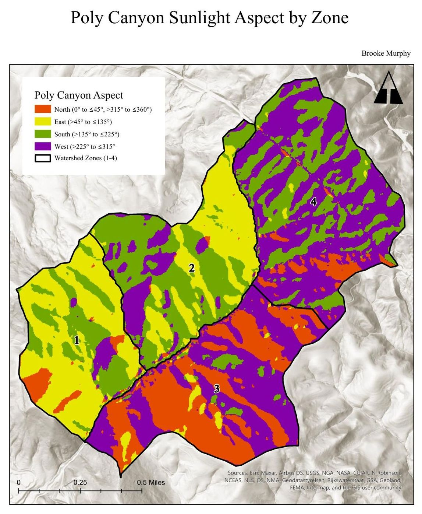
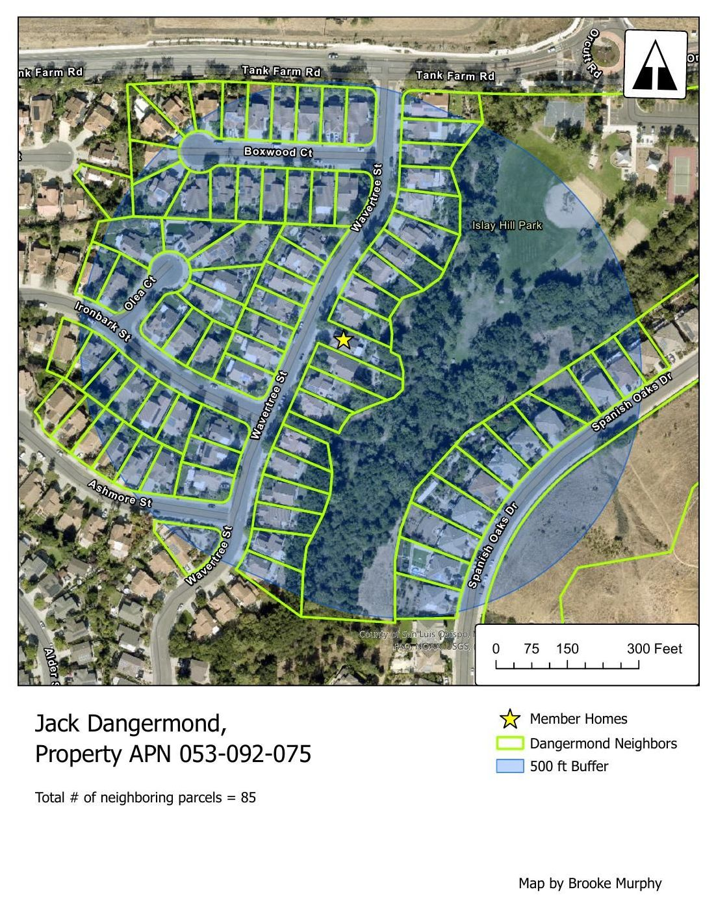
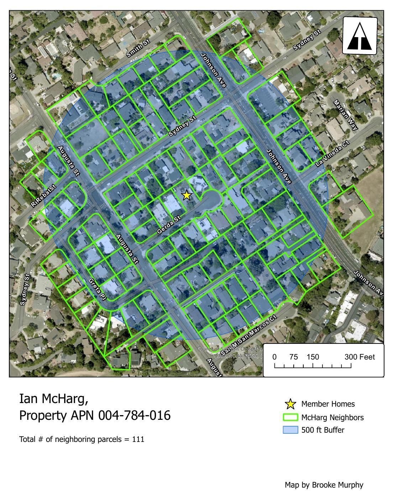
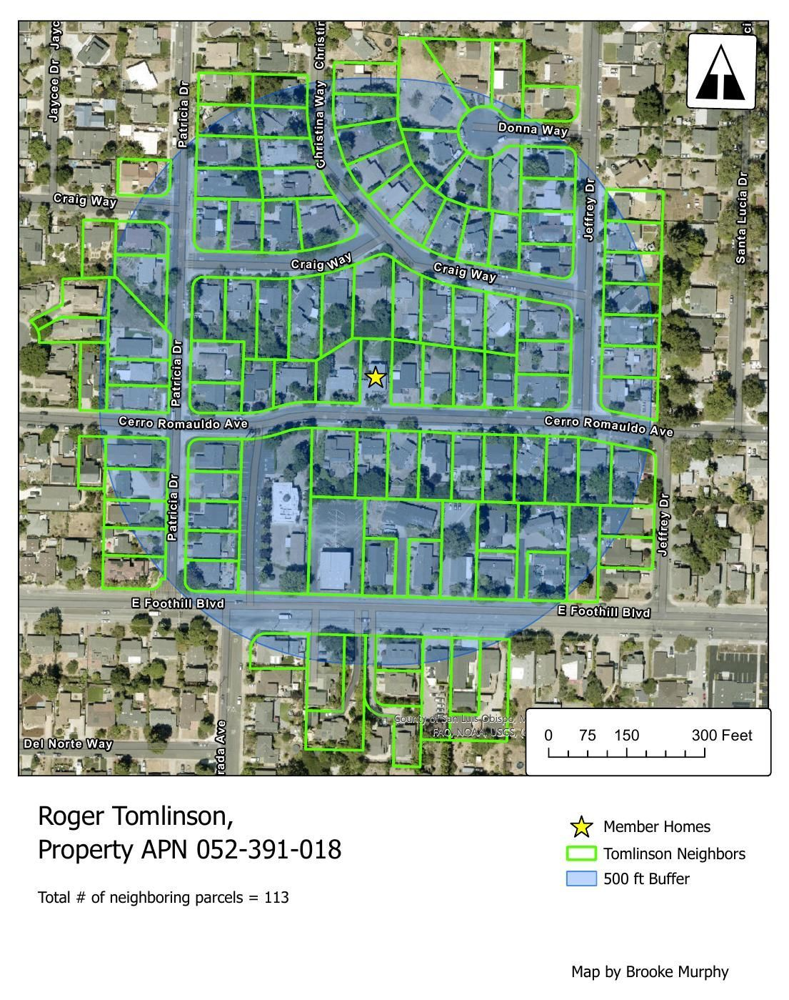
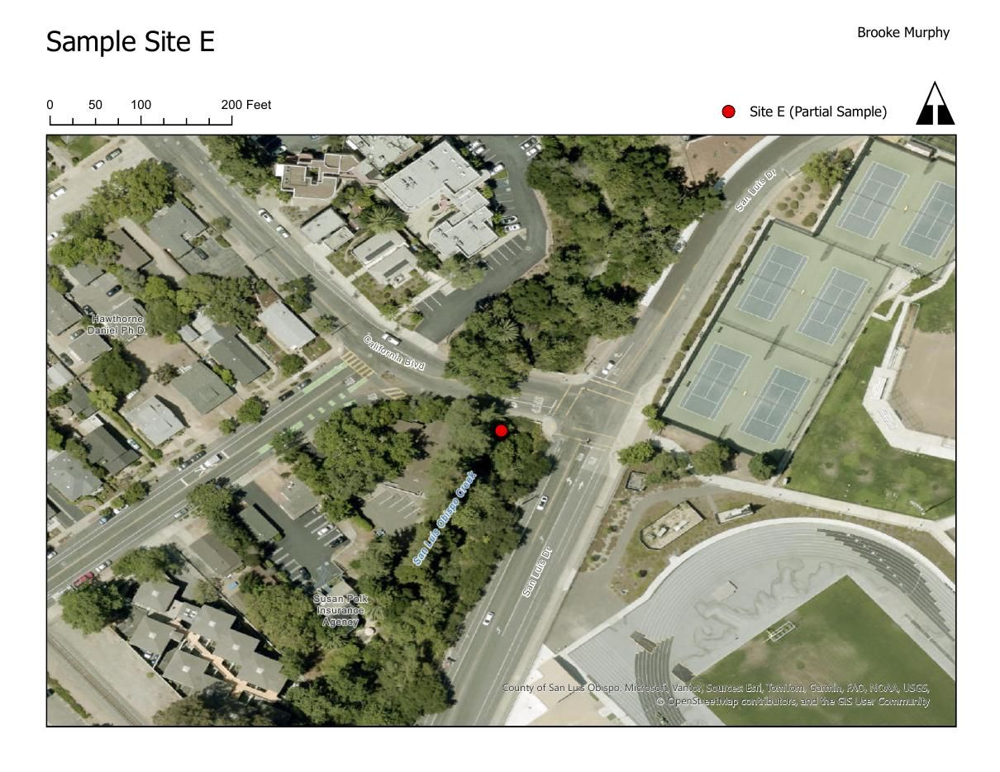
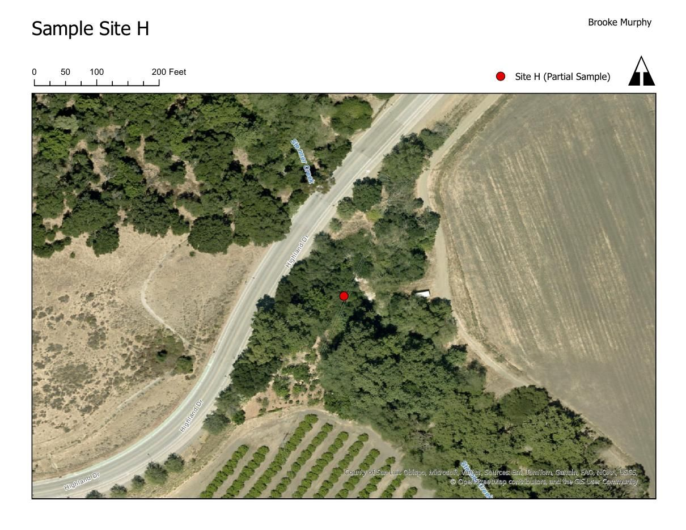

Groundwater elevation contours
A repeatable workflow I prototyped and pitched to my team: 25 years of well records interpolated in R into 5-year contour surfaces, shown in a time-enabled web map.
A repeatable workflow I prototyped and pitched to my team: 25 years of well records interpolated in R into 5-year contour surfaces, shown in a time-enabled web map.

Surveyed reservoir depth and utility valves with an RTK GNSS receiver, georeferenced a 30-year-old paper utility map, and calculated reservoir storage capacity. I did all the georeferencing and made the results maps.



A web tool for estimating crop water demand: draw a field, pick a crop and month, and compare climate scenarios and blue versus green water.

Located and assessed seven milkweed populations that support the Western monarch, then recommended site-specific protection and a fencing plan with cost comparison.
Revising and expanding an open-source curriculum site for introductory GIS, with every lesson taught in both QGIS and ArcGIS Pro.
Four applied GIS projects from one quarter of Cal Poly’s natural resources GIS course, each built around a real client-style request: a question, a deadline and a map that has to answer it.

Where on Cal Poly’s Swanton Pacific Ranch could a sensitive species live? I turned four habitat rules into map layers: northeast-facing slopes, elevations up to 1,600 feet and forest land cover, minus a 50-foot buffer around every stream. Overlaying them left about 3 acres of habitat, which I then broke down parcel by parcel for the landowner.

Which way do the hillsides of Poly Canyon face? From a digital terrain model, I calculated slope aspect, sorted every cell into north, east, south or west, and tabulated the acres of each direction in four watershed zones. Aspect controls how much sun a slope gets, which shapes soil moisture and what grows there.

A planning committee needed to know which neighbors to notify around each member’s property. For seven members (named after GIS pioneers for the exercise), I buffered each parcel by 500 feet, selected every parcel it touched, removed the member’s own lot and delivered a map and parcel list for each, from 63 to 121 neighbors.




A field crew needed a printable map for each of eight sampling sites. I plotted the sites from a coordinate table, then built a consistent map series at 1:1,200 with street labels from Esri’s Living Atlas, so anyone could find each site on foot.



